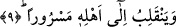
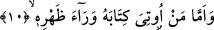

9. Ve sevinçli olarak âilesine dönecektir.
“Ve” kurtulanlar arasında olmaktan dolayı hâlinden memnun ve “sevinçli olarak
ehline” mü’minler topluluğuna veya mü’minlerden bir zümre olan saâdet ve keramet
yolundaki eşine, dostuna “dönecektir.” Yani kolay hesap makamından onların yanına
dönecektir. Halinden memnun, kurtuluş ehli olduğu için sevinçli dedik. Çünkü kendisi
âyetin deyimiyle “alın, kitabımı okuyun” (Hakka 69/19) diyecektir. Kitabı sağ
tarafından verilen kimsenin ehline bu dönüşü daha Cennete girmeden önce mahşerde
olacaktır. Yoksa Aynu’l-maânî’de ifâde edildiği gibi olmayacaktır. Aynu’l-maânî’nin
ifâdesine göre bu âyet bize gösteriyor ki kitabını sağ taraftan alan kimsenin ehli, ondan
önce Cennete girecektir. Oysa işâret edilen bu değildir.
Bu âyette ezel divanında cemâlî esma kâtiplerinin kalemiyle yazılmış istidâd-i fıtrî
kitabına işâret vardır. Bu kitabın kendisine verildiği kimse ile celâlî esma
tartışmayacaktır. Bu kişi Allah’ın cemâli ve lutfunun tecellisinin feyzi ile sevinçli olarak
ehline dönecektir. İşte bu âyette bütün bunlara işâretler vardır.
10. Kimin de kitabı arkasından verilirse,
“Kimin de kitabı arkasından” yâni arka sol tarafından “verilirse...” Bundan önceki
yedinci âyette geçtiği için kitap kelimesinin bu âyette tekrar edilmeyip zamirle
yetinilmesi mümkün iken kitabın açıkça tekrarlanması, o âyetle bu âyette yer alan
kitapların birbirinden farklı olmalarından, içlerindeki yazılan şeylerin birbirine
benzememelerinden ve ilerdeki hükümlerinin birbirinden ayrı olmalarından dolayıdır.
Buna göre âyette denmiş oluyor ki: Ama amel kitabı sol arkasından verilen... Buradaki
“verâe zahrih/arkasından” ifâdesini biz “sol arkasından” diye tefsir ettik. Âyetteki
“verae/gerisi, arkası” ifâdesi daha önce geçen “ûtiye/verilen” fiilinin zarfıdır. Çünkü bu
kelime mekan zarfı olarak kullanılır.
Kelbî der ki: Kitabını sol arka taraftan alacak olan kimsenin sağ eli boynuna
kelepçelenir, sol eli arkasına doğru bükülür ve eli böylece arkada iken oradan kitabı
verilir. Böylece bu âyetle bundan önceki “kitabı sol tarafından verilene gelince...”
(Hakka 69/25) âyeti arasında çelişki kalmamış olur. Çünkü Hakka sûresindeki âyette
arkadan bahsedilmeyerek sâdece sol tarafın ifâde edilmiş olmasıyla yetinilir. Ancak
yukardaki açıklama ile bu iki âyet arasındaki var olduğu zannedilecek çelişki ortadan
kalkmış olur.
İmam Fahreddin Razi der ki: Bazılarına kitaplarının sol taraflarından bazılarına ise
arkalarından verilmesi de mümkündür.